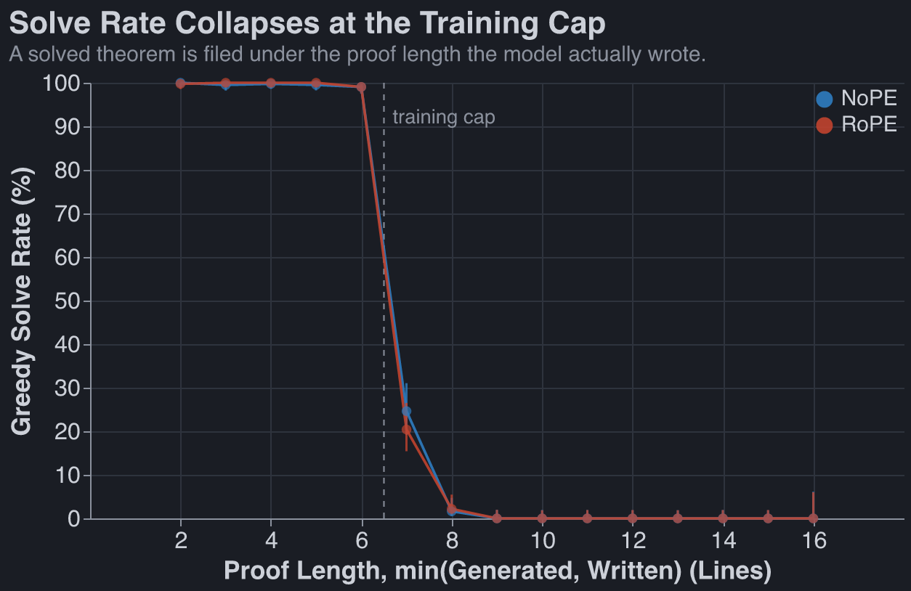
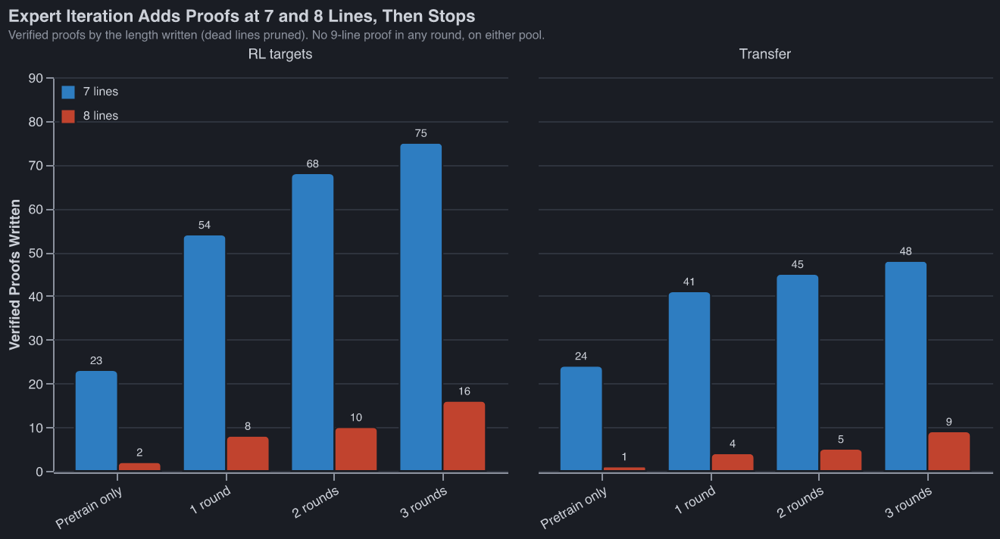
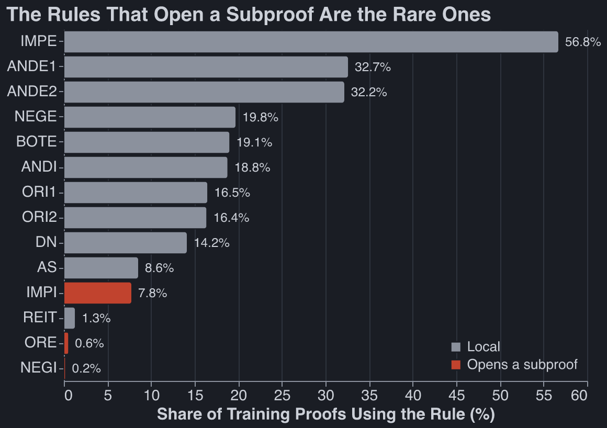
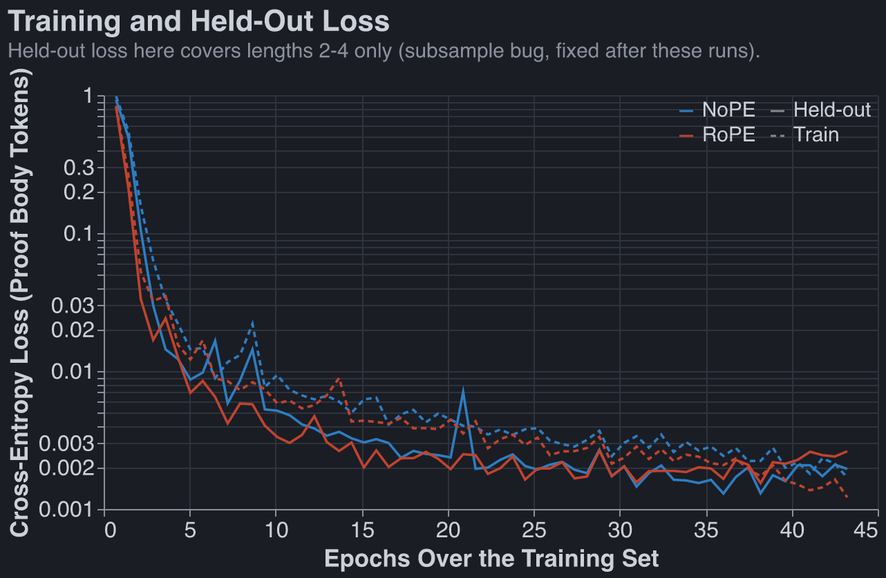
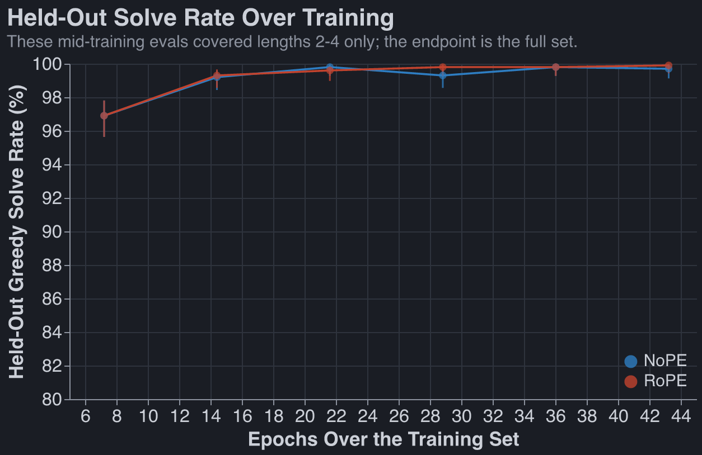
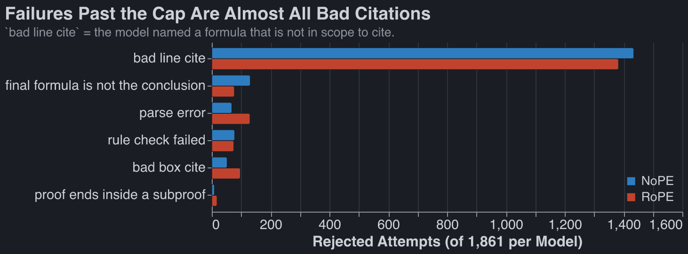
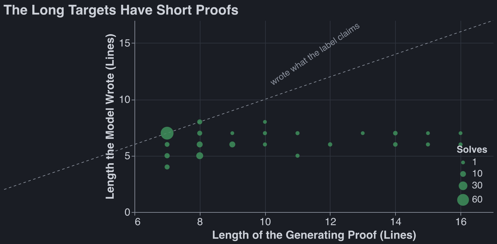

Natural Deduction Takehome
Published Last edited
Executive Summary: #
- We created a generator that provided ~150k unique theorems. Theorems generatored backwards, eg by starting with conclusion and generating steps / premises.
- We omit line number tokens entirely from our vocabularly (possibly cheating, you should look). We also omit PR lines.
- We created a notion of canonicalization of proofs and sequents that I am happy with: canonical atom order, reject theorems with unused precedents, prune dead lines, dedupe if only differences is precedent order. Certainly some duplication remains (eg P^Q not deduped from Q^P).
- We augmented our data with extra depth-two boxes because this did not show up much in our original generator configuration.
- We trained a very vanilla transformer. NoPE and RoPE roughly equally performant, with NoPE before maybe slightly better.
- We were able to prove 5% of length 7-16 theorems in RL target pool on the first try!
- We ran 3 rounds of expert iteration and had proven a total of 62 / 78 / 91 theorems of length >6 after each round.
Decoder: #
We wanted to avoid the problem of learning an entirely new token (N7) to generate length 7 proofs, and of using relative line references. (We would still be stuck with referencing 7 lines prior if one goes this route.)
We entirely omit line number tokens from our vocabulary. If a line depends on a previous statement, the decoder searches backwards in scope and adds the line number reference automatically. If it doesn’t exist, we fill in that line’s own index, and verifier fails. Possibly this is deemed cheating. I don’t think so. Things that require a slight change in format (Claude):
- ANDE1 deriving G: cites some ( G & X ). X is not determined by G. So the model writes the conjunction: Q : ANDE1 ( Q & R ).
- ANDE2: same, other side.
- IMPE deriving G: cites ( X > G ) and X. Once you know the implication, X is determined, so the model writes just the implication: Q : IMPE ( P > Q ). The decoder then knows to also find a line P.
- NEGE deriving F: cites A and ( ~ A ). F says nothing about A. Model writes the negation: F : NEGE ( ~ P ). The decoder also finds P.
- ORE deriving G: cites ( A v B ) plus a box assuming A ending in G plus a box assuming B ending in G. Model writes the disjunction: Q : ORE ( P v Q ). Both boxes are then determined by A, B, G.
(Every other rules cites nothing).
One other gotcha: R is a noun and a verb. We changed the verb to REIT.
Proof Generator: #
We go backwards. First definitions:
forwards: Generate random premises. Generate random next statements from those premises. Eventually just stop, you have some final line that can be your sequent. Bad because:
- you generate lots of dead lines
- you probably don’t do much boxing that’s helpful
backward Generate a random sequent. Randomly pick a rule that generates that sequent. Say:
- Goal = R
- rng IMPE to get there. Needs (X > R). Pick X=Q.
- Goal = q…
Backward is away more annoying to code, but Claude was chomping at the bit to do it, so I let him.
I do not understand this code deeply; Claude hardcoded many transition probabilities with bespoke numbers to try to generate diverse proofs that roughly matched the reference proofs. Never tuned.
Leanness constraints, enforced by construction or by throwing the sample away and resampling:
- Eliminations only start from a premise or a box hypothesis, never from something an introduction
rule just built. This is Prawitz normal form: no “build
( A & B )then immediately takeAback out” detours. - A goal never equals one of its own ancestor goals (kills “prove Q by proving
( Q & X )by proving Q”). - A formula is never derived twice in the same scope; the second time it is cited.
- Every premise is cited somewhere. A premise that duplicates a box hypothesis is rejected, because the decoder cites the hypothesis and the premise would hang loose.
- NEGI and ORE boxes must use their hypothesis. IMPI boxes may be vacuous 15% of the time, since
Q ⊢ ( P > Q )is a legitimate theorem. REITappears only where Fitch forces it: a box whose goal was already in scope, or a conclusion that is literally a premise (capped at 1% of a length bucket).
Not enforced: minimality. A generated 12-line proof may have a 7-line proof by a different route, so a theorem’s generating length is an upper bound on its shortest proof, not a difficulty label.
Check: 0 dead lines in 37,748 generated lines (cap-6 sample) and 0 in the two 7-16 line pools
(20,776 lines), via prune.py.
Canonicalization: #
- Rename atoms by first occurence.
- For model’s proofs, dead lines of logic pruned. This isn’t an issue for code-generated proofs by construction. 7% of model-written proofs of length >6 were pruned.
- If the only difference is reordering of precedents we count this as the same sequent.
- We could very well have spiritually-duped theorems themselves, eg same sequent, just different ordering in ands and ors. This is OK.
- We reject theorems with unused precedents at generation time.
- Same theorem is implemented as a
keystring per record.
Generated data, train / held-out split: #
| proof len | train | held-out | trivial % (train) | body tokens, median (train) |
|---|---|---|---|---|
| 2 | 7,169 | 400 | 8.4 | 30 |
| 3 | 16,813 | 400 | 0.0 | 38 |
| 4 | 39,536 | 408 | 0.1 | 38 |
| 5 | 39,743 | 426 | 0.1 | 47 |
| 6 | 40,885 | 477 | 0.1 | 50 |
| total | 144,146 | 2,111 | 0.5 |
- Quota was 40k per length; lengths 2 and 3 saturate (the generator runs out of distinct theorems), so the set is not flat over length. Held-out is 400 per length from the original split, plus the 111 depth-2 records the augmentation round put aside (8 at length 4, 26 at 5, 77 at 6), which is why lengths 4-6 sit above 400.
- Every record has a
key: the theorem with atom renaming and premise order folded. The sampler drops any theorem whose key it has already emitted, so the dataset has no duplicate theorems, and the train / held-out split is by key, so 0 held-out theorems are a renaming or reordering of a training theorem. - Body tokens = model-facing compact tokens after the prompt,
QEDincluded.
How do we have 7k 2 line proofs? This was weird to me. They look like this:
( ( ¬P ) ∧ ( ( Q → R ) ∨ ( ¬Q ) ) ) ⊢ ( ( Q → R ) ∨ ( ¬Q ) )
N1 ( ( ¬P ) ∧ ( ( Q → R ) ∨ ( ¬Q ) ) )
N2 ( ( Q → R ) ∨ ( ¬Q ) )
Data Augmentation: #
We had basically no nested boxes. Claude changed some parameters to add more. This barely moved the needle on any imporant metric.
Architecture #
| knob | value | why |
|---|---|---|
| layers | 4 | matches the reference (3.3M); depth is what does the sequential box bookkeeping |
| d_model | 256 | |
| heads | 4 (head_dim 64) | |
| MLP | 4× = 1024, GELU | boring |
| norm | pre-norm RMSNorm, no biases | |
| positional | NoPE and RoPE | |
| context | 512 | pure buffer size; costs 0 params |
| vocab | 34 (33 real) | |
| tied embeddings | untied | |
| dropout | 0.0 | data is free, don’t repeat it |
| params | 3.16M | 4 × (4d² attn + 8d² mlp) = 3.15M + embeddings |
| optimizer | AdamW, lr 1e-3, β (0.9, 0.95), wd 0.1 | 200 warmup steps then cosine decay; grad clip 1.0; batch 1024 × 6k steps ≈ 43 epochs; loss on proof body only |
GPUs: #
Just used Runpod H100s, cost me <$10
Solve Rate For Pretrain-Only Model #
Greedy decoding, pass @ 1.

Lengths 2-6 start from the held-out split (400 theorems each); 7-16 from the RL-target and transfer
pools (200 each, 61 at length 16). A solved theorem is filed under
min(generating length, length the model wrote) — proving a “14-line” theorem in five lines is
evidence the theorem was a five-liner, not that the model wrote a 14-line proof. Whisker is a Wilson
95% interval.
RL data #
Greedy, one attempt per theorem. proof len is the generating length, which past 8 is an upper
bound rather than a difficulty (see graph 5). No generated proof was longer than 8 lines, even if
the target was. RL targets are the theorems expert iteration sampled against; transfer is the pool
it never saw.
RL targets
| proof len | n | % solved, pretrain-only (Wilson) | % solved, 3 rounds EI (Wilson) | num solved, pretrain | num solved, 3 rounds |
|---|---|---|---|---|---|
| 7 | 100 | 25.0% [17.5, 34.3] | 69.0% [59.4, 77.2] | 25 | 69 |
| 8 | 100 | 9.0% [ 4.8, 16.2] | 25.0% [17.5, 34.3] | 9 | 25 |
| 9 | 100 | 2.0% [ 0.6, 7.0] | 10.0% [ 5.5, 17.4] | 2 | 10 |
| 10 | 100 | 0.0% [ 0.0, 3.7] | 4.0% [ 1.6, 9.8] | 0 | 4 |
| 11 | 100 | 2.0% [ 0.6, 7.0] | 4.0% [ 1.6, 9.8] | 2 | 4 |
| 12 | 100 | 0.0% [ 0.0, 3.7] | 2.0% [ 0.6, 7.0] | 0 | 2 |
| 13 | 100 | 0.0% [ 0.0, 3.7] | 3.0% [ 1.0, 8.5] | 0 | 3 |
| 14 | 100 | 2.0% [ 0.6, 7.0] | 7.0% [ 3.4, 13.7] | 2 | 7 |
| 15 | 100 | 1.0% [ 0.2, 5.4] | 9.0% [ 4.8, 16.2] | 1 | 9 |
| 16 | 30 | 3.3% [ 0.6, 16.7] | 6.7% [ 1.8, 21.3] | 1 | 2 |
| total | 930 | 4.5% [3.4, 6.0] | 14.5% [12.4, 16.9] | 42 | 135 |
Transfer (never sampled, never trained on)
| proof len | n | % solved, pretrain-only (Wilson) | % solved, 3 rounds EI (Wilson) | num solved, pretrain | num solved, 3 rounds |
|---|---|---|---|---|---|
| 7 | 100 | 25.0% [17.5, 34.3] | 46.0% [36.6, 55.7] | 25 | 46 |
| 8 | 100 | 11.0% [ 6.3, 18.6] | 20.0% [13.3, 28.9] | 11 | 20 |
| 9 | 100 | 4.0% [ 1.6, 9.8] | 6.0% [ 2.8, 12.5] | 4 | 6 |
| 10 | 100 | 4.0% [ 1.6, 9.8] | 7.0% [ 3.4, 13.7] | 4 | 7 |
| 11 | 100 | 0.0% [ 0.0, 3.7] | 2.0% [ 0.6, 7.0] | 0 | 2 |
| 12 | 100 | 0.0% [ 0.0, 3.7] | 3.0% [ 1.0, 8.5] | 0 | 3 |
| 13 | 100 | 0.0% [ 0.0, 3.7] | 1.0% [ 0.2, 5.4] | 0 | 1 |
| 14 | 100 | 1.0% [ 0.2, 5.4] | 5.0% [ 2.2, 11.2] | 1 | 5 |
| 15 | 100 | 0.0% [ 0.0, 3.7] | 4.0% [ 1.6, 9.8] | 0 | 4 |
| 16 | 31 | 3.2% [ 0.6, 16.2] | 9.7% [ 3.3, 24.9] | 1 | 3 |
| total | 931 | 4.9% [3.7, 6.5] | 10.4% [8.6, 12.5] | 46 | 97 |
Transfer improving at all is the load-bearing result: 4.9% → 10.4% is 5.5pp against a ~1.3pp standard error, so the gain is not memorisation of the 134 theorems we harvested proofs from. The frozen model given the same total attempt budget instead of retraining goes 75 → 79 → 82 theorems over three rounds (+7); retraining goes 65 → 115 → 134 (+69).
Harvesting Loop: #
We solved 25% of L7 loops having never seen an L7 loop. Three rounds of expert iteration later, with 50% of our datamix the new proofs we solved (not filtered to L7), we reached 14.5% on the whole RL-target pool, up from 4.5%. On the transfer pool we never sampled, 4.9% → 10.4%.
We pre-trained a NoPE and RoPE transformer, harvested all of the RL problems they solved, and from that point on did expert iteration only on the NoPE pretrain, killing the RoPE model.

The robust frontier — the longest length with ≥5 distinct verified proofs, pruned — is 7 for the pretrain-only model and 8 after expert iteration, on both pools. So L − P = 1. Round 1 already clears the bar on RL targets but lands on 4 distinct L8 proofs on transfer, one short; round 2 clears it on both.
The L9 column is the interesting one. The model has never written a nine-line proof, in any round, on either pool.
Graphs #
Two models in many places: NoPE and RoPE. 3.16M params each, same data, 6k steps.
1. Rule occurrences #

2. Loss over epochs #

3. Solve rate over epochs #

4. Error breakdown past the cap #

5. The Model Finds Much Shorter Proofs Than Our Generator #

The usual shape: a premise like ( ( P & Q ) > S ) & ( P & Q ) carries an implication and its own
antecedent, so two ANDE and one IMPE finish it in six lines whatever the generator did. Or a premise
contradicts something derivable in two steps, and ex falso reaches any conclusion at all.